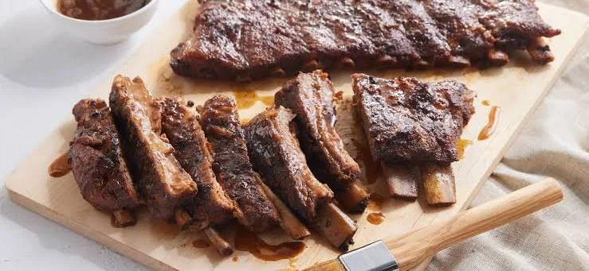

Ribs
Ribs are considered an American delicacy because they are deeply tied to the country’s barbecue traditions and regional cultures, especially in the South and Midwest. Slow-cooked and seasoned with rich rubs or sauces, ribs are known for their tender texture and bold, smoky flavor that reflect generations of cooking techniques passed down over time. They are often served at gatherings, cookouts, and celebrations, making them a symbol of togetherness and comfort food in American culture. People should eat ribs not only for their satisfying taste but also for the experience they offer—enjoying ribs is as much about tradition and community as it is about the food itself.
Dan's Thoughts
“When I think about Barbeque in the backyard, I think about Ribs. They are like a fourth down conversion, can’t go wrong with them.. Ribs are the number 1 barbeque food item in my opinion, so everyone should go out and try them. They're perfect for tailgating for your favorite NFL team before some Sunday football.”

